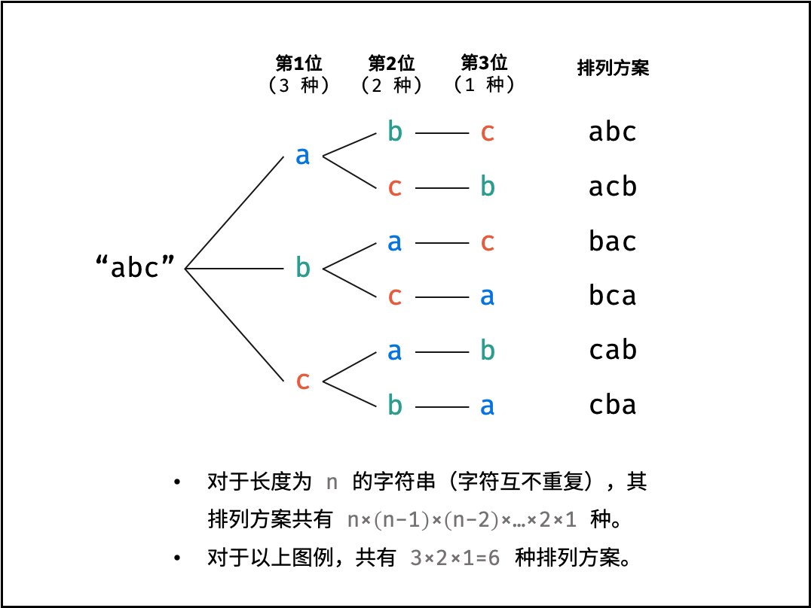
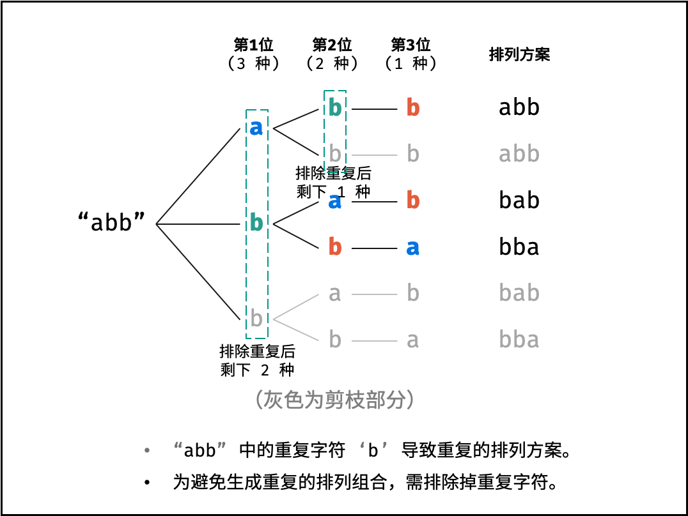

3、剑指 Offer 38. 字符串的排列
一、题目
难度中等403收藏分享切换为英文接收动态反馈
输入一个字符串，打印出该字符串中字符的所有排列。
你可以以任意顺序返回这个字符串数组，但里面不能有重复元素。
示例:
输入：s = "abc"
输出：["abc","acb","bac","bca","cab","cba"]
限制：
1 <= s 的长度 <= 8
二、解法
2.1、回溯 / DFS + 剪枝
核心思想：
我们将这个问题看作有 n 个排列成一行的空位，我们需要从左往右依次填入题目给定的 n 个字符，每个字符只能使用一次。首先可以想到穷举的算法，即从左往右每一个空位都依次尝试填入一个字符，看是否能填完这 n 个空位，编程实现时，我们可以用「回溯法」来模拟这个过程，也就是 DFS 。
按照题目中给定的要求，生成字符串的所有排列之后，里面不能有重复元素，也就是说我们需要按照这个规则来进行剪枝，减少不必要的运算。
对于一个长度为 n 的字符串（假设字符互不重复），其排列方案数共有：n×(n−1)×(n−2)…×2×1
排列方案的生成：
通过字符交换，先固定第 1 位字符（ n 种情况）、再固定第 2 位字符（ n-1 种情况）、… 、最后固定第 n 位字符（ 1 种情况）。

重复排列方案与剪枝：
当字符串存在重复字符时，排列方案中也存在重复的排列方案。为排除重复方案，需在固定某位字符时，保证 “每种字符只在此位固定一次” ，即遇到重复字符时不交换，直接跳过。从 DFS 角度看，此操作称为 “剪枝” 。

递归解析：
- 终止条件： 当 x = len(chars) - 1 时，代表所有位已固定（最后一位只有 11 种情况），则将当前组合 chars 转化为字符串并加入 result ，并返回；
- 递推参数： 当前固定位 x ；
- 递推工作： 初始化一个 Set ，用于排除重复的字符；将第 x 位字符与 i ∈ [ x, len(chars) ] 字符分别交换，并进入下层递归；
- 剪枝： 若 chars[i] 在 Set 中，代表其是重复字符，因此 “剪枝” ；
- 将 chars[i] 加入 Set ，以便之后遇到重复字符时剪枝；
- 固定字符： 将字符 chars[i] 和 chars 交换，即固定 chars[i] 为当前位字符；
- 开启下层递归： 调用 dfs(x + 1) ，即开始固定第 x + 1 个字符；
- 还原交换： 将字符 chars[i] 和 chars 交换（还原之前的交换）；
复杂度分析：
- 时间复杂度 O(N!N)： N 为字符串 s 的长度；时间复杂度和字符串排列的方案数成线性关系，方案数为 N×(N−1)×(N−2)…×2×1 ，即复杂度为 O(N!) ；字符串拼接操作 join() 使用 O(N) ；因此总体时间复杂度为 O(N! × N) 。
- 空间复杂度 O(N^2) ： 全排列的递归深度为 N ，系统累计使用栈空间大小为 O(N)；递归中辅助 Set 累计存储的字符数量最多为 N+(N−1)+…+2+1=(N+1)N/2 ，即占用 O(N^2) 的额外空间。
代码：
// 回溯法 / dfs + 剪枝
class Solution {
List<String> result = new LinkedList<>();
char[] chars;
public String[] permutation(String s) {
chars = s.toCharArray();
dfs(0);
return result.toArray(new String[result.size()]);
}
void dfs(int index) {
if (index == chars.length - 1) {
result.add(String.valueOf(chars)); // 添加排列方案
return;
}
HashSet<Character> set = new HashSet<>();
for (int i = index; i < chars.length; i++) {
if (set.contains(chars[i])) continue; // 重复，因此剪枝
set.add(chars[i]);
swap(i, index); // 交换，将 c[i] 固定在第 x 位
dfs(index + 1); // 开启固定第 x + 1 位字符
swap(i, index); // 恢复交换
}
}
void swap(int a, int b) {
char tmp = chars[a];
chars[a] = chars[b];
chars[b] = tmp;
}
}
2.2、下一个排列
核心思想：
我们可以这样思考：当我们已知了当前的一个排列，我们能不能快速得到字典序中下一个更大的排列呢？
答案是肯定的，参见「31. 下一个排列的官方题解」，当我们已知了当前的一个排列，我们可以在 O(n)O(n) 的时间内计算出字典序下一个中更大的排列。这与 C++ 中的 next_permutation 函数功能相同。
具体地，我们首先对给定的字符串中的字符进行排序，即可得到当前字符串的第一个排列，然后我们不断地计算当前字符串的字典序中下一个更大的排列，直到不存在更大的排列为止即可。
这个方案的优秀之处在于，我们得到的所有排列都不可能重复，这样我们就无需进行去重的操作。同时因为无需使用回溯法，没有栈的开销，算法时间复杂度的常数较小。
复杂度分析：
**时间复杂度：**O(n×n!)，其中 n 为给定字符串的长度。我们需要 O(nlogn) 的时间得到第一个排列，nextPermutation 函数的时间复杂度为 O(n)，我们至多执行该函数 O(n!) 次，因此总时间复杂度为 O(n×n!+nlogn)=O(n×n!)。
**空间复杂度：**O(1)，注意返回值不计入空间复杂度。
代码：
class Solution {
public String[] permutation(String s) {
// 存储所有排列的变量
List<String> ret = new ArrayList<String>();
// string 转换为 char 数组，对其排序
char[] arr = s.toCharArray();
Arrays.sort(arr);
// 循环计算下一个更大的排列
do {
ret.add(new String(arr));
} while (nextPermutation(arr));
// 构造符合题目要求的数据格式 -> String 数组
int size = ret.size();
String[] retArr = new String[size];
for (int i = 0; i < size; i++) {
retArr[i] = ret.get(i);
}
return retArr;
}
// 求下一个更大的排列
public boolean nextPermutation(char[] arr) {
// i 从 arr 的倒数第二个位置开始向前找，直到符合 arr[i] < arr[i + 1] 为止
int i = arr.length - 2;
while (i >= 0 && arr[i] >= arr[i + 1]) {
i--;
}
if (i < 0) {
return false;
}
// j 从 arr 的最后一个位置开始找，直到符合 arr[i] < arr[j] 为止
int j = arr.length - 1;
while (j >= 0 && arr[i] >= arr[j]) {
j--;
}
// 交换 arr[i] 和 arr[j] 的值
swap(arr, i, j);
// 将 arr 中下标从 i+1 开始，直到 arr 的末尾的元素反转
reverse(arr, i + 1);
return true;
}
// 交换 char 数组下标为 i 和 j 的值
public void swap(char[] arr, int i, int j) {
char temp = arr[i];
arr[i] = arr[j];
arr[j] = temp;
}
// 反转 char 数组的部分元素, 下标从 start 开始到末尾
public void reverse(char[] arr, int start) {
int left = start, right = arr.length - 1;
while (left < right) {
swap(arr, left, right);
left++;
right--;
}
}
}
三、解法补充说明
DFS + 剪枝
以 DFS+剪枝 这个解法来说，实际上你可以把问题分解为两个：
- 如何列出字符串的全排列？
- 如何对全排列去重？
我们使用 DFS 生成全排列，并且在生成的过程中剪枝，提高计算效率。
DFS 生成全排列
public class Main {
public static void main(String[] args) {
String str = "1233";
Solution solution = new Solution();
System.out.println(Arrays.toString(solution.permutation(str)));
}
}
// 示范如何使用 dfs 穷举字符串排列（不去重/剪枝）
class Solution {
List<String> result = new LinkedList<>();
char[] chars = null;
public String[] permutation(String s) {
chars = s.toCharArray();
dfs(0);
return result.toArray(new String[result.size()]);
}
public void dfs(int index) {
if (index == chars.length - 1) {
result.add(String.valueOf(chars));
return;
}
for (int i = index; i < chars.length; i++) {
swap(i, index);
dfs(index + 1);
swap(i, index);
}
}
public void swap(int a, int b) {
char temp = chars[a];
chars[a] = chars[b];
chars[b] = temp;
}
}
此时在这个基础上进行改造，做剪枝处理，也就得到了最终的答案。
下一个排列
先给字符串进行排序，就可以得到第一个排列，然后我们不断地计算当前字符串的字典序中下一个更大的排列，直到不存在更大的排列为止即可。
这个方案的优秀之处在于，我们得到的所有排列都不可能重复，这样我们就无需进行去重的操作。同时因为无需使用回溯法，没有栈的开销，算法时间复杂度的常数较小。